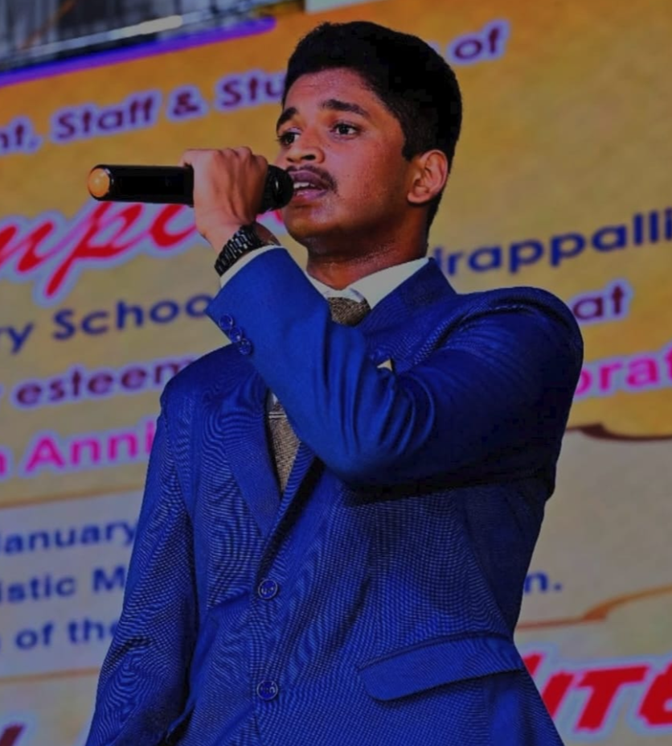

10+
Public Speeches
3rd Place
District Book Fest Award
Stage Confidence & Award Winning
I strongly believe in articulate communication and defending ideas with conviction. Delivered over 10+ public speeches across school and college functions.
Won 3rd Place at the District-level Book Festival speaking competition held at Odisia, Coimbatore. Spearheaded and hosted campus events, including school-wide Teachers' Day celebrations and "The Cybersecurity Overview" seminar at SKCET for engineering students and faculty.
